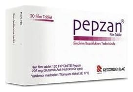

Pepzan 225 mg/225 mg Film Tablet, 20 Adet

Ne için kullanılır
KT · Bölüm 1PEPZAN, domuz midesinin mukoza membranı tabakalarından salgılanan, proteinleri parçalayan bir enzim olan mide mukoza tozu (pepsin) ve glutamik asit hidroklorür içerir. Pepsin, midede proteinlerin küçük parçalara bölünerek emilmesine yardımcı olur. Glutamik asit ise midede mevcut olan inaktif (aktif durumda olmayan) pepsinin aktif hale gelmesine yardımcı olur.
PEPZAN, beyaz renkli, oval şekilli, düzgün yüzeyli film tablettir. Karton kutuda 20 film tablet içeren ambalajlarda sunulmaktadır.
PEPZAN, mide asit azlığı veya yokluğu durumları, uzun süreli mide iltihabı, mide cerrahisi sonrası gelişen sindirim bozuklukları, mide rahatsızlıklarına bağlı gelişen ishal tedavisinde kullanılır.